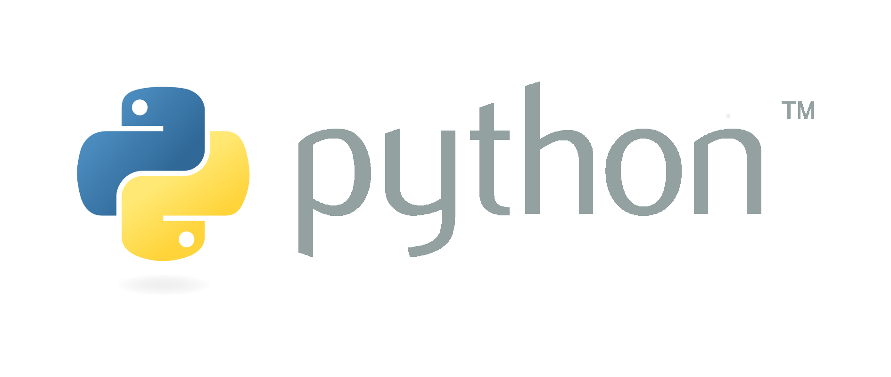
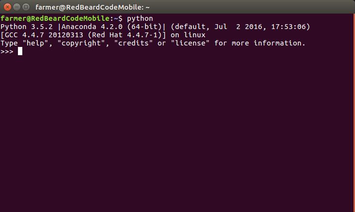

Programmieren
lernen
mit

RedBeardCode
1. Aller Anfang ist schwer.
WIRKLICH?
Python, die Schlange?
Wieso Python?
- Zum Lernen entwickelt

- Einfache Sprache
- Universell
- Desktop: Dropbox,
Automatisierung

- Web: Django, Flask
- Wissenschaft: numpy, jupyter,
highperformance

- Desktop: Dropbox,
Automatisierung
- Plattformunabhängig
- Ökosystem
- Kostenlos
Wieso gibt es Python 2 und 3
- Aufräumen von Fehlentscheidungen
- Python 2.7 ist die letzte Version
- Python 2 nur noch in Ausnahmefällen
Was bringt Python mit?
Battery
included
- Interpreter
- IDE
- Standard libs


Installation

2. Erste Schritte
3. Komplexe Datentypen
4. Kontrollstrukturen
5. Interperter vs. Compiler
| Interpreter | Compiler |
|---|---|
| Da der Quellcode vor dem Programmstart nicht analysiert wird werden auch einfache Fehler, wie Tippfehler erst zur Laufzeit entdeckt. | Während des Compiliers werden viele Fehler schon entdeckt und verhindern so, dass der Fehler das Programm zum Absturz bringt. |
| Generell sind interpretierte Programme langsamer und ineffizient. Es müssen immer die selben Programmteile, wie zum Beispiel Schleifen und Funktionen, erneut übersetzt werden. | Die Übersetzung in ausführbaren Code ist äußerst effizient und optimiert den generierten Code. Compilierte Programme arbeiten sehr schnell, was sich besonders bei lang laufenden Programmen lohnt. |
| Bei der Entwicklung der Software kann man sofort testen, was das Debugging (Fehlersuche) erleichtert | Der Aufwand bei der Software-Entwicklung steigt durch das Compilieren, was einiges an Zeit und Ressourcen in Anspruch nimmt. So muss bei jeder Quelltext-Änderung erneut compiliert werden, wenn das Programm getestet werden soll. |